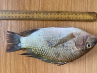

AQUATIC SCIENCE · AFRICA & BEYOND
Aquatic science.
Sustainable production.
Global collaboration.
Researching aquatic ecosystems. Advancing aquaculture. Connecting ideas across borders.
Where scientific insight
meets practical impact.
AwoTlab brings fisheries research, aquaculture enterprise, analytics, learning and innovation together in one connected platform.
We believe research should generate knowledge—and knowledge should create practical solutions for aquatic ecosystems, food systems and the people who depend on them.
Discover our approach ↗“Better science. Better decisions. A more sustainable aquatic future.”
AWOTLABExplore our divisions.
Distinct capabilities. A shared commitment to healthy aquatic systems and sustainable growth.
AwoTlab Fisheries
Evidence-led research on fish populations, aquatic ecosystems and sustainable fisheries management.
AwoTlab Aquaculture
Practical support for fish production, farm development and responsible aquaculture businesses.
AwoTlab Analytics
Turning complex research and business data into useful, evidence-based decisions.
AwoTlab Academy
Practical learning in aquaculture, research methods and quantitative analysis.
AwoTlab Innovation
Exploring technology and new ideas for climate-smart, efficient aquatic systems.
03 / AQUACULTURE BUSINESS
Build a fish business
that’s built to grow.
From quality fish and juveniles to farm planning, management guidance and practical training, AwoTlab supports a more productive aquaculture sector.
Questions that matter.
Evidence that moves us forward.
Our interests span aquatic ecology, fish biology, environmental change and the sustainability of aquatic food systems.

From observation
to insight.
Careful sampling and sound analysis help turn aquatic observations into meaningful evidence.
View specimen gallery ↗RESEARCH
Visit the ResearchGate profile for publications and research updates.
Fish specimen gallery.
06 / AWO TLAB ANALYTICS
Make your data
work harder.
Good decisions begin with reliable evidence. AwoTlab’s analytics focus connects research questions with appropriate methods and clear interpretation.
Talk about your data ↗07 / AWO TLAB ACADEMY
Learn. Apply. Grow.
Build practical capability in fish farming, water-quality management, research methods, R for ecological research, GIS and scientific data analysis.
Ready to build new skills or train your team?
Ask about training ↗08 / INTERNATIONAL COLLABORATION
Good science knows
no borders.
We welcome connections with universities, laboratories, researchers, businesses and development organisations working toward a more sustainable aquatic future. Mathew Olatunji Awotunde is also open to ocean cruises and research expeditions around the world.
Start a conversation ↗TLAB
LET’S WORK TOGETHER
- Joint research & publications ↗
- Student & researcher exchange ↗
- Grant & field-study partnerships ↗
- Technology & capacity building ↗
- Aquaculture enterprise ↗
- Ocean cruises & research expeditions worldwide ↗
ACADEMIC CONNECTION
Research grounded in
academic experience.
Mathew Olatunji Awotunde is a lecturer in the Department of Fisheries and Aquaculture at Ladoke Akintola University of Technology (LAUTECH), Nigeria. His academic and research interests inform AwoTlab’s commitment to rigorous methods, evidence-based analysis and practical knowledge.
Explore research profile ↗Research should generate knowledge, and knowledge should create practical solutions.
THE AWOTLAB APPROACH09 / CONNECT WITH AWOTLAB
Let’s make a
meaningful impact.
Research collaboration, aquaculture services, training or data analysis—we’d like to hear what you’re working on.
START A CONVERSATION